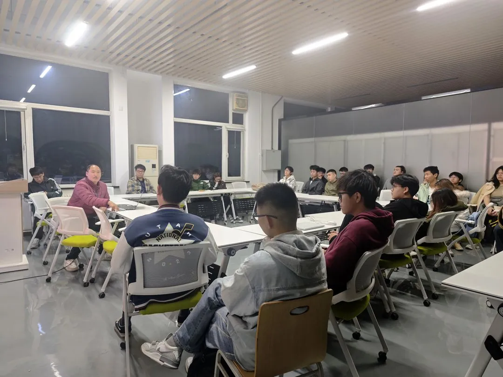
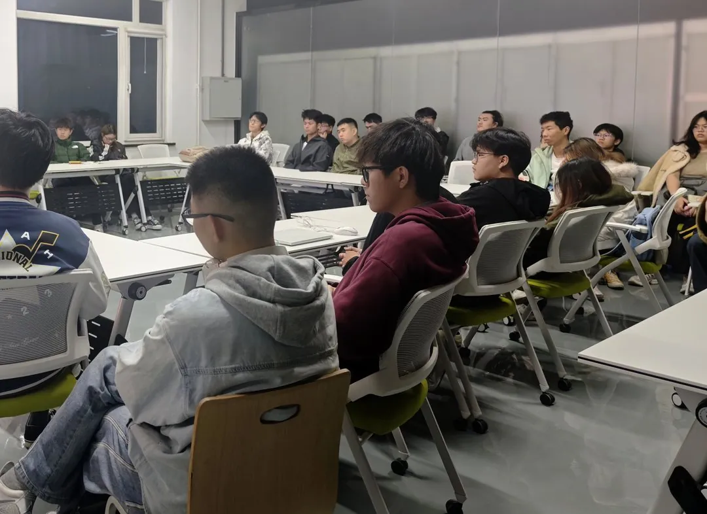
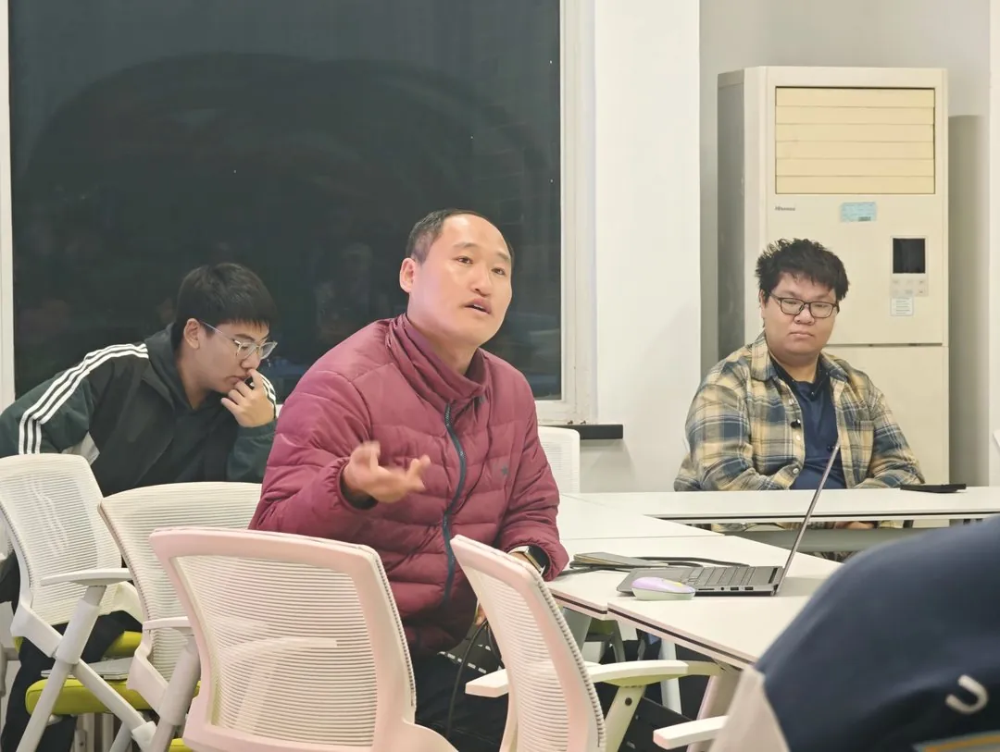
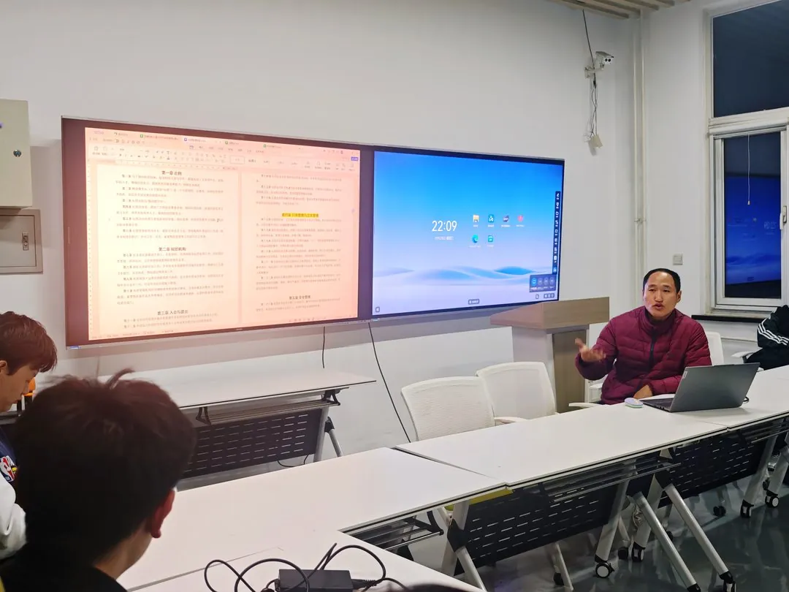

10 月 28 日晚，精创寰宇社 2026-2027 学年第一学期第一次全体会议在金工楼 406 召开。指导老师任学武主讲，社团成员参加。会议公布了新一届学生管理层名单，重申社团宗旨，明确全年 15 项竞赛安排，并逐条通过《社团管理制度》。

一、新一届学生管理层公布

会议公布了调整后的学生管理层：社长曾文涛，副社长安泽翔、孙铖泽、乔龙腾，文宣部负责人何嘉萌、吴佳宣。
任学武在会上说明，管理层与其他成员是平级关系，不设上下级，主要职责是服务同学，负责对接事务、组织竞赛等工作。分工按竞赛与事务划分：熟悉哪类竞赛、常驻实验室时间较长的成员，牵头负责相应板块。成图、挑战杯等三大赛的组织，工程赛的对接协调，文宣与学习空间等均已有负责人。成员如有竞赛疑问，可随时向学长学姐请教。
二、重申「团队第一」的社团宗旨

会议重申社团宗旨的两条内容。第一条是团队第一：团队协作优先，不搞单打独斗。第二条是培养有情怀、愿意投入的同学——从本学期起，社团的资源向真正愿意干事的人倾斜。
会上回顾了社团的传承传统：自 2019 年工作室成立以来，一届带一届，学长受到上一届学长的关照，成长后再传给下一届；有学长从这里保研到浙大，带走的不仅是奖项，还有在社团练出来的组织与协作能力。
会议同时明确，社团反对技术垄断，请教问题被敷衍、资源捂着不分享，是明确不允许的事。成员之间如有矛盾，调解不开可找指导老师处理。
三、全年 15 项竞赛安排明确
会上梳理了社团全年主打的 15 项竞赛，报名分两类：
- 三大赛（挑战杯、京彩大创、中国国际大学生创新大赛〈原「互联网+」〉）归口团委，开放报名——在社团内报，或自行找指导老师报，都可以；
- 其余由社团组织报名的赛事，成员统一从社团渠道咨询报名。这是入社后要遵守的第一条规则。
重点资助的是工创赛（中国大学生工程实践与创新能力大赛）与机创赛（机械创新设计大赛）：一个归口工程实践中心，一个归口机电学院，最锻炼设计与动手实践能力——按赛事主题，从零做出一件实物产品。
赛事之间还能联动：工创、机创的作品打磨好，可以接着打京彩大创、国创赛，一套成果走多个赛道。蓝桥杯、计算机设计、数学建模、机器人、电子设计、三维数字化、成图等赛事，按兴趣与能力选择。
四、《社团管理制度》逐条通过
会议逐条通过《社团管理制度》，实验室管理部分讲得最细。

卫生与安全：
- 常驻成员组成卫生轮值小组，垃圾当日清、不过夜；
- 插排串接人走断电，违规大功率电器、明火一律禁止；
- 无人机等禁飞设备统一入库房，废旧锂电池送学校有害垃圾回收点；
- 尽量不在实验室打游戏，放松去实验室外。
物资与设备：
- 采购统一登记电子台账，以小组为单位、组长负责；
- 赛后高价值物资回收验收，退团时交接清楚，让设备流转给下一届；
- 在 406 参加活动，须持实验室安全准入资格证，没考的尽快考。
社团还将出台经费管理办法，竞赛奖金的一部分留作公共经费，用于物资、奖励与活动。
会议还通报了三项后续安排：培训主题由成员投票确定；成员二次选拔方案由管理层制定；历年竞赛作品将保留下来，作为新成员的练手项目。会议最后提出一项要求：散会前，带走自己的垃圾，把凳子归位。
精工铸梦，创启寰宇。
精创寰宇社 · 金工楼 406
2026.11
本文根据 2026 年 10 月 28 日第一次全体会议内容整理。竞赛报名与实验室安排以社团最新通知为准。